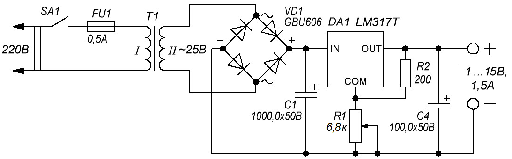
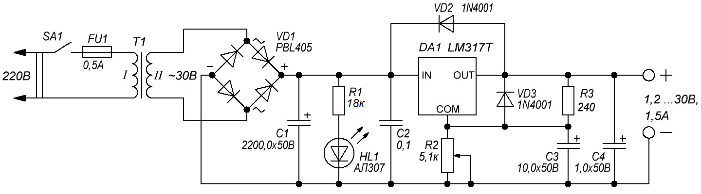

Блок питания на LM317T
LM317T — популярный регулируемый положительный линейный стабилизатор напряжения. LM317T способен обеспечить плавную регулировку выходного напряжения от 1,2 В до 37 В с током нагрузки до 1,5 А. Также данный стабилизатор может работать в качестве стабилизатора тока. Ниже представлены две схемы на стабилизаторе LM317T.
Первая схема (рис. 1) содержит минимум деталей и позволяет регулировать напряжение от 1 В до 15 В. В зависимости от того, какой трансформатор примените, можно получить другой диапазон напряжений.
C помощью трансформатора сетевое напряжение 220 В уменьшается до 25 В. Переменное напряжение от трансформатора выпрямляется диодным мостом и пульсации сглаживаются с помощью конденсатора С1.
Резисторы R1 и R2 образуют делитель напряжения. В зависимости от сопротивления этих резисторов можно получить разное выходное напряжение.
В качестве выпрямителя можно использовать диодный мост GBU606. Он рассчитан на ток до 6 А. При большом токе в нагрузке микросхему LM317T необходимо установить на радиатор с помощью термопасты для улучшения теплообмена.

Таблица 1
| Обозначение | Наименование | Номинал | Примечание |
|---|---|---|---|
| DA1 | Стабилизатор | LM317T | |
| С1 | Конденсатор электролитический | 1000 мкФ × 50 В | |
| С2 | Конденсатор электролитический | 100 мкФ × 50 В | |
| R1 | Резистор постоянный | 200 Ом / 1 Вт | |
| R2 | Резистор переменный | 6,8 кОм | 10 кОм |
| Т1 | Трансформатор | 220/25В 1А | С напряжением вторичной обмотки 12-13 В и током 1 А |
| VD1 | Диодный мост | GBU606 |
Вторая схема (рис. 2) содержит больше деталей. Она основана на типовой схеме включения стабилизатора LM317T.
Конденсатор C3 предотвращает усиление пульсаций при увеличении выходного напряжения. Конденсатор C2 рекомендуется, если LM317 не находится в непосредственной близости возле конденсаторов фильтра источника питания. Конденсатор C4 улучшает переходную характеристику, но не влияет на стабильность. Диоды VD1 и VD2 являются защитными.
Светодиод HL1 является индикатором работы блока питания.

Таблица 2
| Обозначение | Наименование | Номинал | Примечание |
|---|---|---|---|
| С1 | Конденсатор электролитический | 2200 мкФ × 50 В | |
| С2 | Конденсатор | 0,1 мкФ | 1мкФ. Керамический или танталовый |
| С3 | Конденсатор электролитический | 10 мкФ × 50 В | |
| С4 | Конденсатор электролитический | 1 мкФ × 50 В | |
| FU1 | Предохранитель плавкий | 0,5 А | |
| DA1 | Стабилизатор | LM317T | |
| HL1 | Светодиод | АЛ307 | |
| R1 | Резистор постоянный | 18 кОм / 0,5 Вт | |
| R2 | Резистор переменный | 6,8 кОм | 10 кОм |
| R3 | Резистор постоянный | 240 Ом / 1 Вт | |
| Т1 | Трансформатор | 220/30В 1,5А | |
| VD1 | Диодный мост | PBL405 | |
| VD2, VD3 | Диод | 1N4001 |